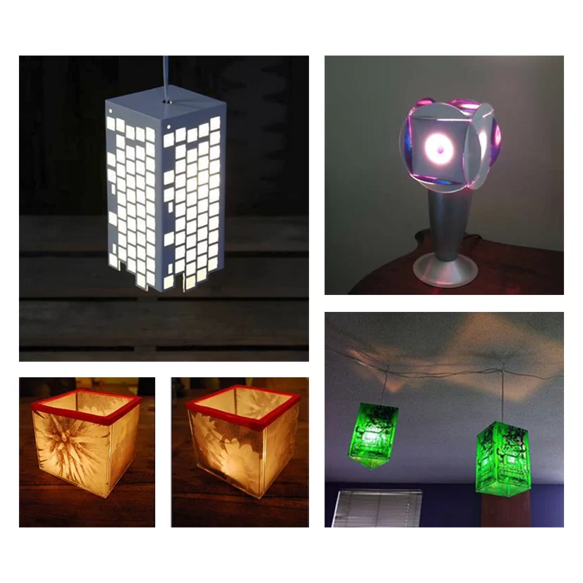
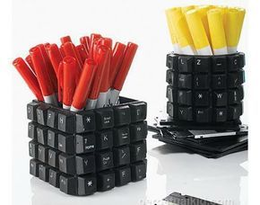
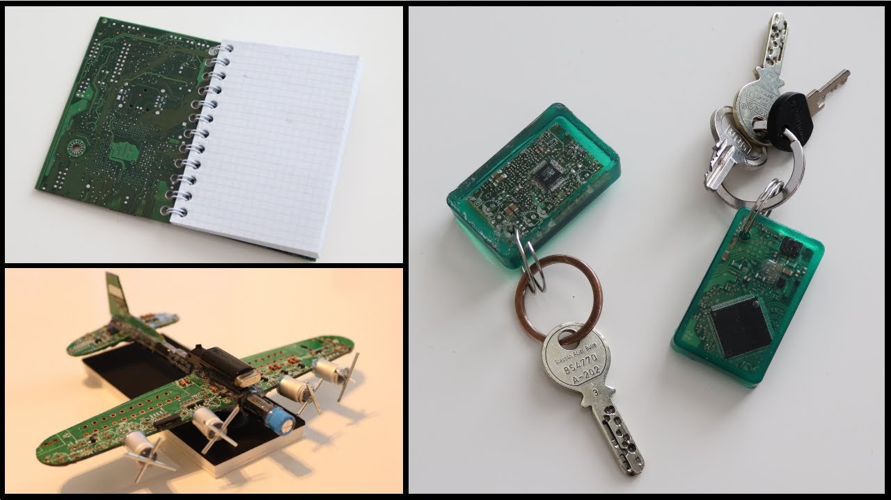
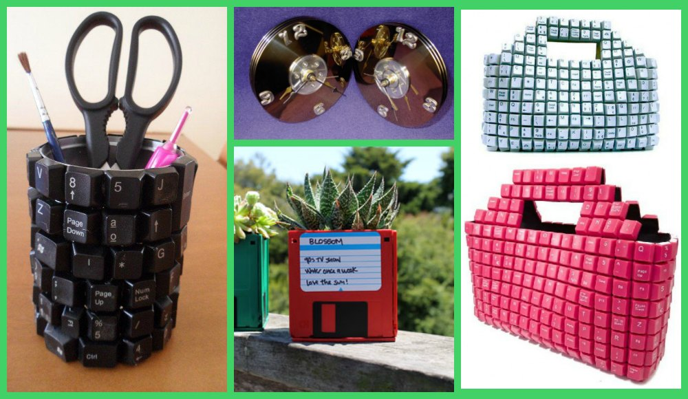
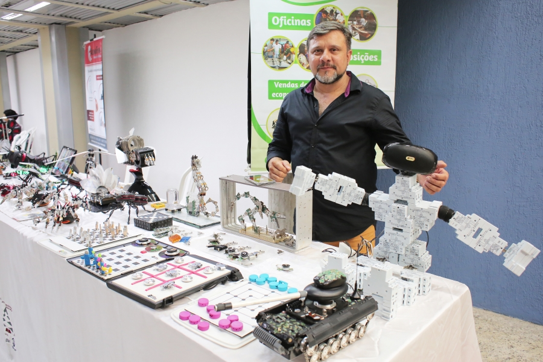
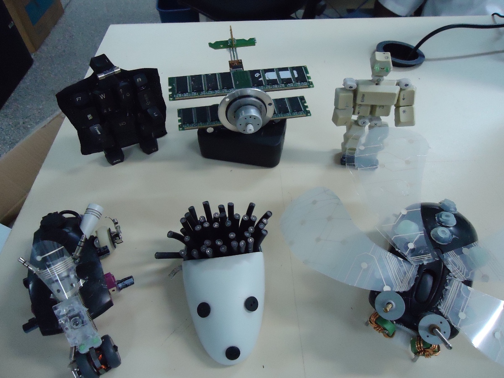

Reaproveitamento do Lixo Tecnológico
  O Que é o Reaproveitamento?
Reaproveitar o lixo tecnológico significa dar uma nova utilidade a equipamentos eletrônicos que, embora considerados obsoletos ou quebrados, ainda contêm peças e materiais que podem ser reutilizados. É uma forma de transformar resíduos em recursos, evitando o descarte prematuro e reduzindo o impacto ambiental causado pela produção e pelo acúmulo de lixo eletrônico.
Benefícios do Reaproveitamento
Quando reaproveitamos corretamente um aparelho eletrônico, contribuímos para a diminuição da extração de recursos naturais, economizamos energia na produção de novos produtos e evitamos a contaminação do solo e da água. Também promovemos o consumo consciente e ajudamos a construir uma sociedade mais sustentável.

Como os Equipamentos Podem Ser Reutilizados?
Muitas vezes, um dispositivo considerado "velho" ainda pode ter partes úteis. Placas-mãe, memórias, carcaças plásticas, fios de cobre e baterias são exemplos de componentes que podem ser recuperados. Além disso, aparelhos inteiros podem ser reformados para uso social ou educacional.
Algumas práticas comuns incluem:
- Doação de computadores e celulares antigos para escolas ou projetos sociais;
- Transformação de peças em arte, mobiliário ou objetos decorativos;
- Utilização de componentes em oficinas de robótica ou eletrônica;
- Venda de peças para manutenção de equipamentos semelhantes.
Projetos de Reaproveitamento no Brasil
Diversas iniciativas vêm se destacando no país pelo trabalho com o reaproveitamento do lixo eletrônico. Algumas delas são:
• Computadores para Inclusão: iniciativa do governo federal que recondiciona equipamentos para uso em telecentros.
• TechTrash: startup que coleta e transforma e-lixo em matéria-prima reciclada.
• Recicloteca: ONG que trabalha com educação ambiental e reaproveitamento criativo de materiais eletrônicos.
• Centro de Recondicionamento de Computadores (CRCs): espaços que reformam equipamentos para doação a escolas e comunidades.
O Papel da Criatividade e da Educação
O reaproveitamento também envolve criatividade. Muitos artistas e estudantes utilizam partes de computadores antigos para criar esculturas, quadros e objetos funcionais. Além disso, escolas e oficinas utilizam peças eletrônicas para ensinar conceitos de física, lógica e sustentabilidade.
Incentivar esse tipo de prática é fundamental para formar uma nova geração mais consciente, capaz de transformar resíduos em oportunidade.
  